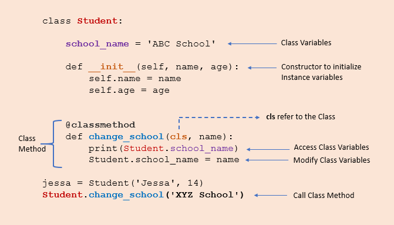

oops
OOPS
Encapsulation & Abstraction
Bundling data and methods within a single unit.
when you create a class, it means you are implementing encapsulation
encapsulation allows us to restrict accessing variables and methods directly and prevent accidental data modification by creating private data members and methods within a class.
public : accessable anywhere form outside the class.
private : Accessible within the class
Protected : within the class and its sub-classes(inheritance)
Getters and Setters
getter method to access data members and the setter methods to modify the data members
private variables are not hidden fields like in other programming languages. The getters and setters methods are often used when:
When we want to avoid direct access to private variables To add validation logic for setting a value
class Employee:
def __init__(self,name,salary,age):
# public members
self.name = name
# private members
self.__salary=salary
self.__age=age
# protected members
self._project="Oracle pvt ltd"
# getters
def get_age(self):
print(self.__age)
# setters
def set_age(self,age):
# you can use the logic before changing
# the object
if age > 130:
print("not sure anyone is alive.. please submit proof of living!")
self.__age = age
def show(self):
print(f"{self.name}'s age is {self.__age} drawing salry of {self.__salary}")
class EmployeeDepartment(Employee):
def __init__(self,name):
Employee().__init__(self)
self.name = name
def show(self):
print(f"{self.name} employee working in project {self._project}")
emp=Employee("employee",100000,33)
emp.show()
emp.set_age(29) #Private members can be accessed by using public methods.
emp.get_age()
print(emp._Employee__age) #Name mangling.
print(f"Employee project details: {emp._project}")
sunil=Employee("Sunil",100000,34)
sunil.set_age(32)
Constructors
Special method used to create and initialize an object of a class. The primary use of a constructor is to declare and initialize data member/instance variables of a class.
Constructor Types
-
Default Constructor - It does not perform any task but initializes the objects
-
Non-parametrized constructor - A constructor without any arguments is called a non-parameterized constructor.
-
parametrized constructor - A constructor with defined parameters or arguments is called a parameterized constructor.
class Employee:
# class variable
count=0
# Parameterized Constructor with default values
def __init__(self,name="Raghu",age=12):
self.name = name
self.age=age
Employee.count+=1
# Non Parametrized Constructor.
# def __init__(self):
# self.name="Raju"
# self.age=18"
# when there is no __init__ method, its default constructor
def display(self):
print(f"employee {self.name} is around {self.age} years old")
emp1=Employee("Ram",18)
emp1.display() # Output: employee Ram is around 18 years old
# Object created with default values
emp2=Employee()
emp2.display() # Output: employee Raghu is around 12 years old
print(f"Total number of employees: {Employee.count})
Constructor Chaining
Constructor chaining is the process of calling one constructor from another constructor. Constructor chaining is useful when you want to invoke multiple constructors, one after another, by initializing only one instance. constructor chaining is convenient when we are dealing with inheritance.
class Vehicle:
def __init__(self,engine):
self.engine = engine
class Car(Vehicle):
def __init__(self,engine, max_speed):
super().__init__(engine)
self.max_speed=max_speed
class ElectricCar(Car):
def __init__(self,engine,max_speed,km):
super().__init__(engine,max_speed)
self.km=km
ev = ElectricCar('1500cc', 240, 750)
print(f"{ev.engine} is having max speed {ev.max_speed} travelling distance of {ev.km}")
Polymorphism
Polymorphism in Python is the ability of an object to take many forms. Polymorphism is mainly used with inheritance.
Polymorphism With Inheritance
Using method overriding polymorphism allows us to defines methods in the child class that have the same name as the methods in the parent class. This process of re-implementing the inherited method in the child class is known as Method Overriding.
class Vehicle:
def __init__(self,name,color):
self.name = name
self.color = color
def show(self):
print(f"{self.name} is having color of {self.color}")
def max_speed(self):
print("Vehicle max speed is 150")
def change_gear(self):
print('Vehicle change 6 gear')
class Car(Vehicle):
# due to polymorphism, max_speed() and change_gear()
# methods are overridden for the car object.
def max_speed(self):
print("car max speed is 250")
def change_gear(self):
print('car change 7 gear')
car = Car('Benz', 'Red')
car.show() # this method isin't overridden.
car.max_speed()
vehicle = Vehicle('Volvo', 'Yello')
vehicle.show()
vehicle.max_speed()
Polymorphism class methods
class StudentASection:
def students(self):
print("A section students")
def class_teacher(self):
print("Mohan")
class StudentBSection:
def students(self):
print("B section students")
def class_teacher(self):
print("Mohana")
a_section_student=StudentASection()
b_section_student=StudentBSection()
# you can create function and pass as objects
#def some_function(obj):
# obj.call_methods
for students in (a_section_student,b_section_student):
students.students()
students.class_teacher()
You could also pass as a single object to the above objects into the function
def get_student_details(obj):
obj.students()
obj.class_teacher()
get_student_details(a_section_student)
get_student_details(b_section_student)
Class & static methods
class and static methods are special types of methods that have different behaviours and use cases when compared to regular instances methods
regular/instance method
these are bound to regular object instance. they can access and modify the object's state and can be called on an object instance.
class Person:
def __init__(self, name, age):
# instance variables
self.name = name
self.age=age
# instance methods
def get_name(self):
return self.name
# instance methods
def get_age(self):
return self.age
# instance methods
def set_name(self,newname):
self.name = newname
# instance methods
def set_age(self, newage):
self.age = newage
person1 = Person("Sunil", 30)
print(person1.get_name())
print(person1.get_age())
person1.set_name("Kumar")
print(person1.get_name())
class methods
class methods are bound to class itself and they can access only class variables. It can only allow to change the class variable state across all the class objects.
Class methods are used when we are dealing with factory methods. factory methods are those which returns the class object for different purposes.
They are always called using ClassName.method_name()

from datetime import date
class Student:
collage_name = "ABC Collage"
def __init__(self,name,age):
self.name = name
self.age = age
@classmethod
def calculate_age(cls,name,birthyear):
# calulate age and set it as age, then
# return a new object
return cls(name,date.today().year-birthyear)
def show(self):
print(f"{self.name} age is: {self.age} studying in colleage: {Student.collage_name}")
sunil = Student("Sunil",39)
sunil.show()
shiva=Student.calculate_age("Shiva",1983) # invoke a new clas
shiva.show()
Explanation of above code.
-
we created two objects, one using the constructor and the second using the
calculate_age() -
The constructor takes two arguments name and age. On the other hand, class method takes cls, name, and birth_year and
returns a class instance which nothing but a new object -
The
@classmethoddecorator is used for convertingcalculate_age() method to a class method. -
The
calculate_age()method takes Student class (cls) as a first parameter andreturns constructor by calling Student(name, date.today().year - birthYear), which is equivalent to Student(name, age).
static method
Any method we create in a class will automatically be created as an instance method. We must explicitly tell Python that it is a static method using the @staticmethod
class Student:
@staticmethod
def student_greeting(greeting_msg):
print(f"Hello {greeting_msg}")
Student.student_greeting("Welcome Students !")
sunil=Student()
sunil.student_greeting('Welcome Sunil !')
class Employee:
def __init__(self,name,project_name):
self.name = name
self.project_name=project_name
# instance method
def work(self):
requirements = self.gather_requirements(self.project_name)
for task in requirements:
print(f"Completed: {task}")
@staticmethod
def gather_requirements(project_name):
if project_name == "ABC":
requirements = ["task1", "task2"]
else:
requirements = ["task1"]
return requirements
emp = Employee("Sunil","ABC")
emp.work()
output:
Completed: task1
Completed: task2
Access Class Variables in Class Methods
@classmethod
def change_collage(cls, newcollname):
# change class variable
cls.collage_name=newcollname
Student.change_collage("New coll")
sunil.show()
another example of static and class methods
classmethod
A class method is a method that takes the class itself as the first argument, rather than an instance of the class. It is useful when you want to perform operations that involve the class itself (for example, modifying class variables or calling other class methods). Class methods are defined using the @classmethod decorator, and the first argument is conventionally named cls.
When to use @classmethod: When you need to work with the class as a whole (like creating factory methods, manipulating class-level data, or altering class attributes). When you want to create alternative constructors. When the logic is related to the class, not specific instances.
class Server:
server_count = 0 # Class variable to track how many servers exist
def __init__(self, name, ip):
self.name = name
self.ip = ip
Server.server_count += 1
@classmethod
def create_default_server(cls):
return cls("DefaultServer", "192.168.0.1")
# Example usage
server1 = Server("MainServer", "192.168.1.1")
server2 = Server.create_default_server() # Using class method to create an instance
print(server1.name) # Output: MainServer
print(server2.name) # Output: DefaultServer
print(Server.server_count) # Output: 2
staticmethod
A static method does not receive any special first argument (neither self nor cls). It behaves like a regular function but belongs to the class's namespace. You use a static method when the method's logic neither depends on the instance nor the class, but you want to group it inside the class for logical reasons.
When to use @staticmethod:
When you need utility functions that are logically related to the class but don't need access to instance (self) or class (cls) data. When the method doesn't modify class or instance state.
class Server:
def __init__(self, name, ip):
self.name = name
self.ip = ip
@staticmethod
def is_valid_ip(ip):
parts = ip.split(".")
return len(parts) == 4 and all(0 <= int(part) < 256 for part in parts)
# Example usage
print(Server.is_valid_ip("192.168.1.1")) # Output: True
print(Server.is_valid_ip("999.999.999.999")) # Output: False
Summary:
Class Method (@classmethod): Use when you need to operate on the class itself. The method has access to the class via cls.
Static Method (@staticmethod): Use when the logic doesn't need to access the instance (self) or class (cls). It is more like a utility function within the class.